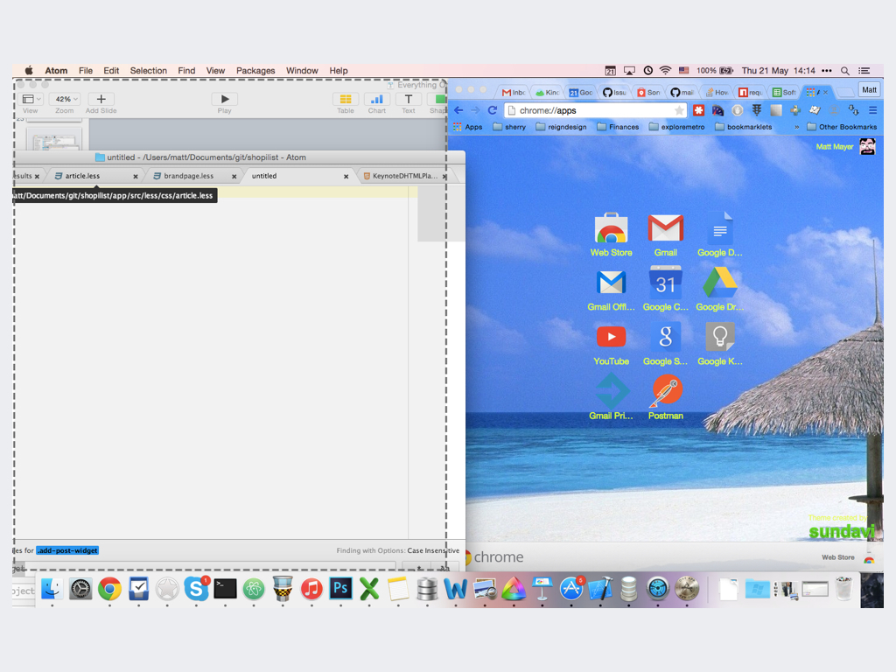

Developer Productivity
A collection of tricks, tools that help developer improve day-to-day productivity!
Mac Tools
Some useful tools we could use daily to help we improve our productivity.
iTerm2
Better terminal app
Oh my zsh
Better bash
f.lux
f.lux makes the color of your computer’s display adapt to the time of day, warm at night and like sunlight during the day.

jumptcut
Minimalist Clipboard Buffering for OS X.
Esp with your keyboard shortcut
cinch
keeps your windows organized
NameChanger
Swiss Army knife for renaming using pattern,regex, sequence and more.
Go2Shell
Opens a terminal window to the current directory in Finder
Daily Coding
Git Best Practices
- Commit Related Changes
- Commit Often
- Don’t Commit Half-Done Work
- Write Good Commit Messages
- Use Branches
- Stash local change temp
- .gitignore
Git Commit Message
Webstorm IDE
- Use keyboard shortcut
- live template
- rename, code format, quick jump
RSS Reader
Keep update to latest tech.
Markdown
Better way to write down with focus solely on content.
Blog
Not recommended:
- Wordpress
- 新浪博客
Recommended:
其他
- 多沟通，别死钻牛角尖
- 番茄工作法
- 减少分心
- 多分享
- 多用快捷键
- 不断学习